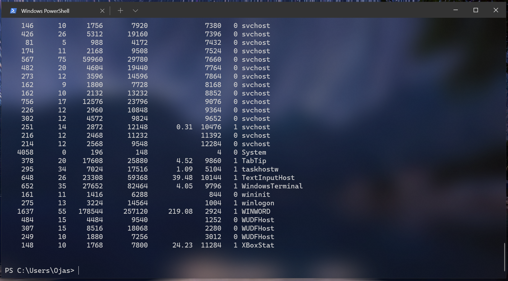
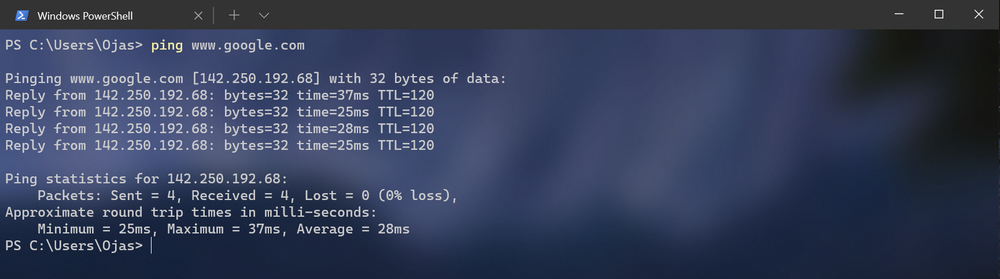
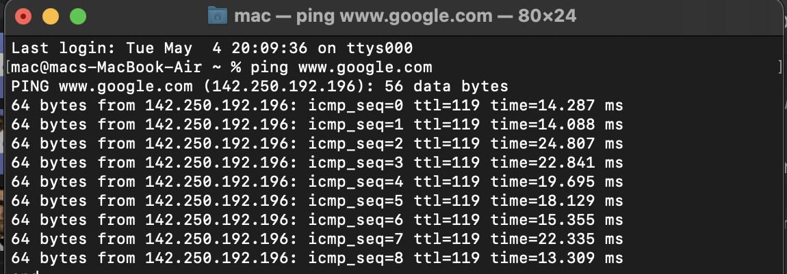
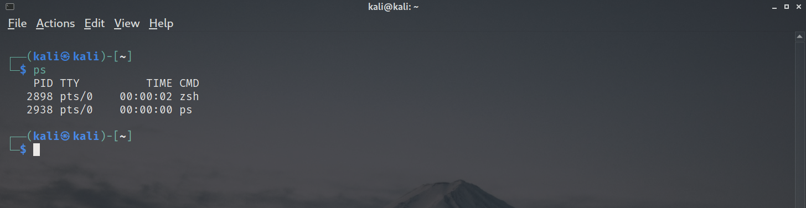
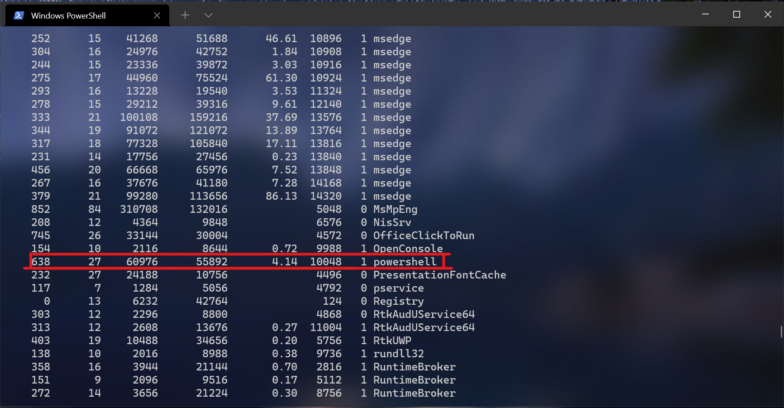
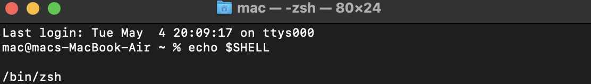

Terminals and the art of terminal-ing
Terminals. It feels like everyone has heard the word. It also feels like everyone thinks they know what a terminal is, but do they? A terminal’s actual definition has derailed significantly. Here is a terminal:
What? This is not a terminal? You imagined a cool looking dual monitor computer with a black window and a person typing away their life? Nope. This is a terminal. This is actually one of the later iterations of a terminal. A terminal or at least a computer terminal is hardware which allows you enter commands in the computer. See, back in the day, we didn’t have those sleek looking laptops; we had huge gigantic computers which took up whole rooms. The tangled wiring and all the blocks of complicated switches that covered the entire room was actually JUST the processor. No, you cannot have a computer with just the processor, you need something to tell this processor what to do: a terminal. These terminals didn’t have the fancy close buttons and graphically advanced icons you see and interact with nowadays, they had a black screen. Period. It was a black screen with random text that didn’t make sense to a normal life-possessing human being. And you typed the command you wanted the computer to do. That picture up there, you’d call THAT a terminal (a computer terminal) because you would use a piece of hardware like up there to control a computer. Now according to this definition, you could call your keyboard and mouse your terminal because they give the computer inputs too, right? Yeah, I suppose you can.
Terminal Emulators.
Okay so that is a terminal. Then what about the black windows we use today? What are those and why do their aesthetic look so awfully similar? What ARE these:

These are terminal emulators. Obviously, we wouldn’t want to go back to THAT heavy ugly rusted piece of hardware. These terminal emulators give you the feels of a terminal from 1970 but on your own modern computer. The above terminal is a terminal on MacOS which uses the Z-shell (more on that later). These terminals were one of the pioneers of terminal emulators. However, these don’t look good too. Why would someone use this black and green monstrosity when we have a coloured GUI(Graphical User Interface). Actually…

They can look beautiful nowadays, but that doesn’t change the fact, GUI is clearly better than these scary terminal emulators. First of all, I love terminal emulators (terminals for short). I love how you can type and feel the power running through your fingers (Linux people would get it). Additionally, this is closest you can get to your computers heart and it’s actually quite useful. Some actions which GUI cannot ever do, are possible here.
For example, suppose you have to find if google is online without opening google (or you want to know how fast www.google.com actually is). Thanks to your trusty terminal, you can do it right in one command.
Windows users have it pretty straight forward, just type `ping www.google.com`

The statics on your screen are straight. Your computer receives 4 packets of 32 bytes from the google servers and records the time and finds the average.
Mac users using the ZSH (Z-Shell) have a more advanced ping system. Typing `ping www.google.com` and stopping the command by CMD + C, you’ll get something like this.

While windows’ PowerShell only receives 4 packets, the Z-shell on Mac keeps receiving (64 bytes) data packets and gives you the mathematical opportunity of finding the average yourself.
Linux users can also type `ping www.google.com`. if your Linux distribution uses bash, it’ll give something like the windows’ PowerShell otherwise it’s using Z-shell or some other shell.
Okay so that got too technical. What the heck is a shell? Why does shell matter so much? WHY?
Shells!

Okay, terminology! What would you call the command line you just used to ping google? Terminal? That’s what I’ve been calling. hypocritically, I also told you that terminals were HARDWARE that were used a long time ago. That is true as well. Nowadays, the terminology used for command line interfaces have grown wide. Long story short, you can use either of these terms to address your terminal: Terminal emulator, Terminal, Shell, Bash, Command Line or a console. Although, these terms have replaceable definitions for a terminal emulator but they do have very clear separate meanings. Consequently, to form a fully technical and nerdy statement, you could say something like: I used the Bash script on my terminal emulator using a command line. Confused? Let’s just look at shells.
Shells are what program your terminal is running on. There are a lot of shells. The leaders are bash, Z-shell and PowerShell but there are more of them. They are the program that will tell your computer that ‘ping’ is the command used to receive data from a given server. They will tell your computer that a `ps` command should display all the running applications. That is what a shell is and it’s essential that you know what shell you’re using at all times because that could affect the spectrum of commands you can use.
To find what shell you’re using is a fairly complicated process but through either trial and error or deep analysis, you would be able to find what shell your terminal is using.
Starting from the easiest, just type ‘ps’ to find all the files your computer is running right now and look for the shell file. You’ll have to look deep sometimes and for my amazing linux users, it’s the easiest.

See? Zsh represents Z-shell which the shell that the linux I am using uses (Kali Linux). Ubuntu has the infamous bash script. And PowerShell on windows has PowerShell but you’ll have to search in the millions of files windows has always open for you.

There you go, PowerShell. Sometimes, on older versions of PowerShell, you might also find ‘PWSH’.
How to find what shell you’re using on macOS is simple too with the command `echo $SHELL`. (MacOS offers multiple shells).
